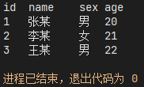
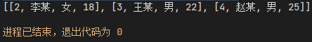
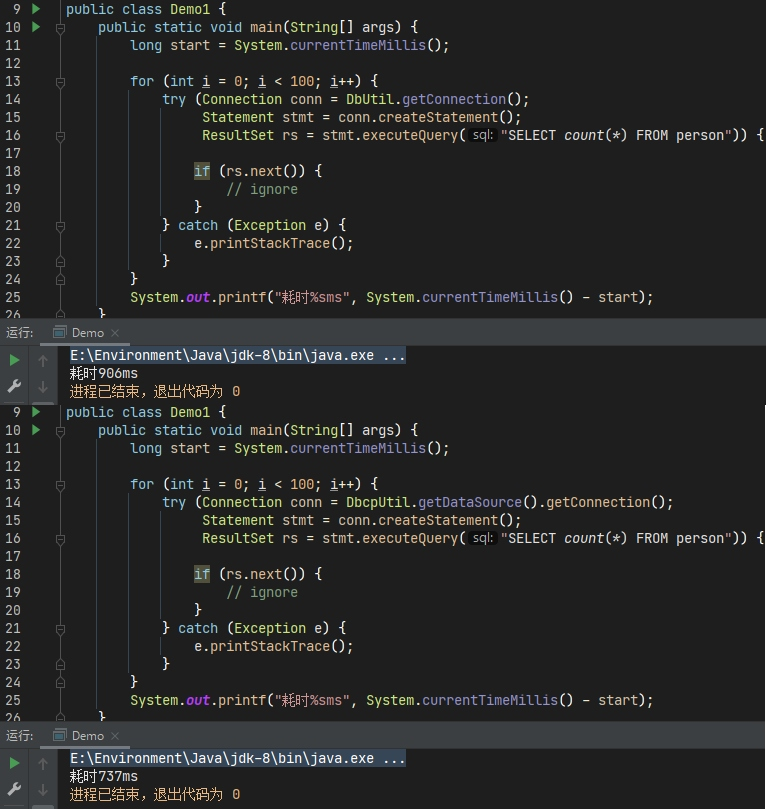
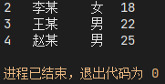
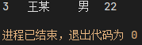

Java与MySQL
一、概述
Java为了在许多不同的数据库上进行访问与操作时有统一的标准，定义并提供了JDBC（Java Database Connectivity）规范，同时也是一套API，为Java提供了通用的数据库访问接口，使其几乎可以访问任何数据源。而各数据库厂商则负责提供其具体的实现——JDBC驱动。开发者则负责开发应用程序调用JDBC API，JDBC API使用驱动程序管理器和特定于数据库的驱动程序来建立与不同数据库的连接

1、JDBC
JDBC API由JavaSE的两个包组成，当安装JDK的时候便自动获得了：
- java.sql：核心包，JDBC的基础框架
- javax.sql：对上一个包的补充，将API功能扩展到了服务器端。既包含于JavaSE，也是JavaEE的组成部分
1.1 JDBC组件
java.sql包主要有以下类
- DriverManager：负责加载各种不同数据库驱动程序，并根据不同的请求返回相应的数据库连接对象
- SQLException：表示在数据库连接过程中和SQL语句的执行时所发生的异常
和接口（需驱动程序提供者实现）
- Driver：驱动程序对象，被加载到DriverManager中，处理与数据库的连接。不会直接操作此对象而是通过DriverManager
- Connection：数据库连接对象，负责与数据库的通讯，可以产生执行SQL的语句对象
- Statement：语句对象，用于执行增删改查（特指静态SQL和单次执行）
- PreparedStatement：预编译语句对象，用于执行包含动态参数的SQL语句（在服务器端编译，允许重复执行以提高效率，同时防止SQL注入）
- CallableStatement：用于调用数据库的存储过程
- ResultSet：表示在使用语句对象执行SQL后的结果集，即从数据库检索的数据对象
而javax.sql则提供了以下功能：
- DataSource接口：作为DriverManager的代替，可以建立与数据源的连接
- Rowsets接口：行集，与其它各种类和接口协同工作，包括三类：监听器或事件通知、行集元数据、读写设备
- 连接池和语句池
- 分布式事务
前两个可以由应用程序直接使用，后两个则由中间层内部使用
1.2 数据类型映射
Java的数据类型在与数据库的数据类型之间使用时的映射规范如下
| 数据库数据类型 | Java数据类型 |
|---|---|
| CHAR、VARCHAR、LONGVARCHAR | String |
| NUMERIC、DECIMAL | BigDecimal |
| BIT | boolean |
| TINYINT | byte |
| SMALLINT | short |
| INT | int |
| BIGINT | long |
| REAL | float |
| FLOAT、DOUBLE | double |
| BINARY、VARBINARY、LONGVARBINARY | byte[] |
| DATE | java.sql.Date |
| TIME | java.sql.Time |
| TIMESTAMP | java.sql.Timestamp |
| BLOB | java.sql.Blob |
这种类型匹配映射规范不是强制的，对于MySQL来说，任何数据库数据类型都可以转换为String，任何数字类型都可以转换为任何Java的数字类型，但可能会发生舍入、溢出或精度丢失的情况。
1.3 版本关系
JDBC版本与JDK版本的关系
| JDBC | JDK |
|---|---|
| 1.0 | 1.1 |
| 2.0 | 1.2和1.3 |
| 3.0 | 1.4 |
| 4.0 | 1.6 |
| 4.1 | 1.7 |
| 4.2 | 1.8 |
参考链接
2.MySQL连接器（驱动）
MySQL Connector/J驱动程序是MySQL为JDBC提供的驱动程序，它有易于开发的特性，包括对驱动管理器的自动注册、标准化的有效性检查、分类的SQL异常处理、对大量更新的支持、以及对java.time包的本地和偏移日期时间变体的支持。
对于使用通用数据访问设计模式的大型程序，考虑使用流行的ORM框架，如Hibernate、Spring的JDBC模板或MyBatis，以减少使用JDBC的代码量，方便进行调试、调优和维护
2.1 版本兼容性
常用的驱动版本是5.1.x和8.0.x，两者使用时有所区别，但都能在不同版本的MySQL服务器上使用
| 驱动版本 | JDBC版本 | MySQL服务器版本 | JRE版本 | JDK版本 |
|---|---|---|---|---|
| 5.1 | 3.0，4.0，4.1，4.2 | 5.6，5.7，8.0 | JRE 5或者更高 | JDK 5.0和JDK 8.0或者更高 |
| 8.0（推荐） | 4.2 | 5.6，5.7，8.0 | JRE 8或者更高 | JDK 8或者更高 |
2.2 URL连接语法
既然是连接器，那么就有连接语法，和网页地址一样是URL，相当于Java程序到数据库的连接（通常是TCP）。其语法格式是由数据库厂商指定的
1 | protocol://[hosts][/database][?properties] |
任何出现在连接语法中的URL保留字符都必须进行URL编码或转义。包括字符/、:、@、(、)、[、]、&、#、=、?和空格
协议（protocol）通常是jdbc:mysql
主机名（hosts）视情况而定，可以仅由主机名组成，也可以是多个主机名、端口号或特定于主机的属性和用户凭据。对于本机则是localhost或127.0.0.1，端口号默认3306。均不指定时默认localhost:3306。而用户凭据则建议在URL之外设置
数据库（database）指定默认使用的数据库。如果未指定则不使用，此时要么在Connection实例中调用setCatalog()方法（不建议调用use语句），要么在执行SQL语句时必须指定包含数据库名的表名
属性（properties）适用于MySQL服务器的一系列全局属性（包括用户名和密码），与http中的参数语法一致。不同之处在于键值对只能是字符串且键名区分大小写
有关可配置的属性，参考开发者指南 6.3 Configuration Properties
二、实践
1、获取驱动
可以在MySQL官方下载页面下拉选择Platform Independent获取压缩包，其中的jar包即为驱动。更推荐使用maven安装：
1 | <dependency> |
依赖的范围为runtime，表示该依赖包不是编译所需，而是运行时所需的（默认compile）
2、准备数据
然后准备一组数据
1 | CREATE DATABASE IF NOT EXISTS `test` /*!40100 DEFAULT CHARACTER SET utf8 */; |
3、代码示例
使用JDBC与驱动操作数据库一般有以下几个步骤：
- 加载（注册）驱动
- 配置属性（用户与连接信息）
- 获取连接对象
- 获取执行SQL语句的对象
- 执行SQL获取结果集
- 处理结果集
- 关闭（释放）连接
1 | public static void main(String[] args) { |
JDBC4.0以前，连接数据库前需要先使用
Class.forName("com.mysql.cj.jdbc.Driver")来加载数据库驱动。JDBC4.0之后则不需要了，可以直接获取连接对象，这是通过Java的SPI扩展机制实现的
- 5.1.x的驱动名是
com.mysql.jdbc.Driver，而8.0.x改为了com.mysql.cj.jdbc.Driver。因为在8.0.x中做了兼容性处理，所以在8.0.x中使用5.1.x的驱动名也是可以的 getConnection有三种重载方法，一是仅url，二是url、用户名和密码字符串，三是url和Properties类Statement对象用于执行基本的SQL语句。使用executeQuery方法来执行查询，executeUpdate方法执行增删改，后者返回SQL语句匹配到的行数，而不是受影响的行数。
如果无法预知使用何种语句，可以使用execute方法。当SQL语句是查询时返回true，增删改则返回false
对于查询语句，都可以调用getResultSet方法获取结果集ResultSet。对于增删改语句则调用getUpdateCount方法获取受影响的行数ResultSet可以获取ResultSetMetaData元数据，其中有表信息ResultSet中列的索引从1开始而不是0next方法将结果集的游标从当前位置向后移动一行。游标最初位于第一行之前，之后每次移动一行。返回false时，表示游标位于最后一行之后- 对于获取到的数据，既可以视为字符串
getString，也可以视为对象getObject然后转换，参考[数据类型映射](#1.2 数据类型映射) - 最后依次释放ResultSet、Statement、Connection对象（按与创建时相反的顺序）

4、优化
资源关闭的代码过于冗长，优化方案是使用try-with-resource语法
1 | public static void main(String[] args) { |
其它重复的代码则可以提取为工具类。首先是连接属性可以写入属性文件db.properties（maven项目放在resources目录下）
1 | driver-name=com.mysql.cj.jdbc.Driver |
然后编写工具类
1 | public class DbUtil { |
提取方法，测试
1 | public static void main(String[] args) { |

三、连接池
数据库连接是一种很昂贵的资源，建立与释放连接会相当耗时。图：不使用连接池执行100次获取与释放连接与使用连接池的耗时对比

1、介绍
连接池是一种创建、管理与维护数据库连接的缓存技术，被设计为在需要对数据库发出请求时可以重用连接。连接池可以极大地提高应用程序的性能，降低总体资源使用率。同时还减少了用户等待与数据库连接创建的时间
通过JDBC与驱动访问MySQL数据库时使用连接池的优点有
- 减少了创建连接的时间：尽管与其他数据库相比，MySQL提供了快速连接设置，但是通过JDBC创建新的连接仍然会产生网络和JDBC驱动程序开销，如果连接被回收到连接池中，则可以避免
- 简化的编程模型：在使用连接池时，每个应用程序线程都可以像未使用连接池之前一样工作
- 控制资源使用：如果每次线程需要一个连接时都创建一个新连接，而不是使用连接池，那么能会造成应用程序资源的浪费，并且在高负载时，可能会导致不可预知的情况
2、连接池是如何工作的
实际上在连接池中，创建连接并使用之后不会立即释放，而是将连接放回池中以便其他线程使用，这样就不必创建新的连接。当连接从池中取出时，会它被请求它的线程独占使用。从代码角度上说，这与应用程序的线程每次调用DriverManager.getConnection()是一样的。使用连接池，则可能使用新连接或现有连接（而非总是新连接）。
连接池有许多参数可以设定，例如可以通过设置最小连接数、最大连接数和空闲连接数，以优化特定问题场景下或特定环境中连接池的性能。
3、各种连接池
JDBC提供了连接池的标准接口javax.sql.DataSource，同数据库驱动一样，要使用JDBC连接池，还需要选择JDBC连接池的实现。常见的连接池有：
- C3P0：开源的JDBC连接池，特点是实现了数据源和JNDI的绑定
- DBCP：作为apache的开源项目之一，依赖于Jakarta commons-pool对象池机制，tomcat内置的默认连接池
- HikariCP：后起之秀。号称性能最快的数据库连接池。Springboot 2.x默认使用
- Druid：此处特指alibaba开发的数据库连接池，特点是强大的监控以及其它扩展功能
4、使用连接池
这里以最基础的DBCP作为演示，不同的数据源使用时都是大同小异的。
普通java项目通过官网下载jar包然后添加到类路径，使用maven则添加依赖如下
1 | <dependency> |
然后修改一下前面的属性文件，属性名必须与DBCP的配置参数名一致
1 | driverClassName=com.mysql.cj.jdbc.Driver |
修改工具类。在这里也可以通过DataSource对象来设置参数
1 | private static BasicDataSource dataSource; |
然后使用
1 | public static void main(String[] args) { |
这里try-with-resource语法中的关闭资源并非是真正的关闭，而是表示释放到连接池中，除此以外可以发现，与没有使用连接池时代码几乎无区别
四、其它扩展内容
1、SQL注入与预编译语句
前面所使用的Statement对象主要用于执行静态SQL语句，当条件参数化时则需要拼接字符串，例如
1 | String id = "3"; |
假设这个参数由用户输入，且为程序期待的值时SQL语句获取的结果集就是正常的，如果这个参数是精心构造的SQL语句呢
1 | String id = "3 OR 1=1"; |
此时相当于WHERE条件恒为真，所有表数据均被获取，发生了SQL注入的问题

SQL注入攻击产生的后果很严重，为了解决此问题，JDBC设计了PreparedStatement预编译语句对象（由驱动提供具体实现），可以完全避免SQL注入的问题
1 | public static void main(String[] args) { |

与Statement对象有所不同，使用时要先构造SQL语句，参数全部使用?代替，然后再获取PreparedStatement对象，通过其setXXX方法传参，第一个参数为参数索引（即第几个?），与列索引相同从1开始而不是0，最后再executeXXX。此时执行的SQL语句是SELECT * FROM person WHERE id='3 OR 1=1'，其中的参数已被转义为字符串
2、JDBC事务
在JDBC中也可以通过代码使用事务，Connection对象的setAutoCommit(boolean autoCommit)方法用于开启或关闭事务，默认情况下，新连接处于自动提交模式（单语句事务状态）。如果在事务中调用此方法并更改自动提交模式，则事务会被提交
1 | try { |
要设定事务隔离级别，使用下面的方法。如果在事务中调用此方法，则结果取决于驱动定义
1 | conn.setTransactionIsolation(Connection.TRANSACTION_SERIALIZABLE); |
或者获取当前连接的事务隔离级别
1 | conn.getTransactionIsolation(); |
常量Connection.TRANSACTION_NONE表示无事务或不支持事务，Connection.TRANSACTION_REPEATABLE_READ为MySQL默认隔离级别
也可以设置、判断读写模式
1 | conn.setReadOnly(true); |
3、批处理
当需要重复执行一句仅参数不同的DML语句时，可以使用批处理功能来提高性能。要确定数据库是否支持批处理，先使用Connection对象的getMetaData()获取元数据，然后调用supportsBatchUpdates()方法，返回true则表示支持
1 | String sql = "INSERT INTO `person` (`name`, `sex`, `age`) VALUE (?, ?, ?)"; |
Statement、PreparedStatement和CallableStatement对象都可以使用addBatch()方法来将参数或语句添加到批处理中，然后调用executeBatch()将这一组命令提交到数据库执行。
如果所有命令都执行成功，则返回一个int类型的数组，其中元素的顺序与添加批处理命令时的顺序相同，值有以下几种：
- 大于或等于0：表示命令执行成功，并且表示受影响的行数
- 常量
Statement.SUCCESS_NO_INFO：表示命令执行成功但受影响的行数未知 - 常量
Statement.EXECUTE_FAILED：表示命令执行失败，但仅在命令失败后驱动继续处理剩余命令时才会存在，不处理则直接抛出异常
在执行前，可以使用clearBatch()方法清空当前添加的所有批处理语句（无法指定删除某个语句）
特殊情况：如果执行批处理时，其中的命令所影响的行数超过了int类型的范围，则应该使用
executeLargeBatch()方法，此方法返回long类型的数组